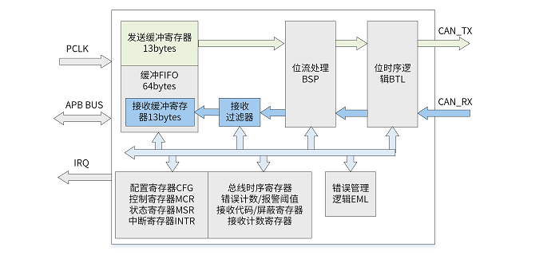

12.7.1. 概述¶
CAN控制器，应用于汽车控制系统和一般工业环境中的区域网络控制。
CAN是一种多主机、多广播的通信协议。
CAN具有很高的可靠性和良好的错误检测能力。
12.7.1.1. 特性说明¶
支持CAN2.0A和CAN2.0B协议
支持11位标识符（标准格式）和29位标识符（扩展格式）
可编程通信速率最高达1Mbps
支持多种操作模式：正常模式、只听模式、自测模式、休眠模式、复位模式
接收过滤器，支持两种过滤模式
64 bytes 缓冲
错误检测与处理：错误计数、错误报警阈值可配置、错误捕获、仲裁丢失捕获
12.7.1.2. 原理框图¶
CAN控制器原理框图如 图 12.40 所示：
位时序逻辑BTL：负责同步位时序，确保数据传输的稳定性，以预先配置的波特率发送和接受报文。
位流处理器BSP：负责对发送数据进行位填充、附加CRC等处理，并为位时序逻辑模块生成位流；负责对接收的位流进行去填充、验证CRC等处理；负责检测总线上的错误并将错误报告给错误管理逻辑。
接收过滤器：是一个可编程的报文过滤单元，允许控制器根据报文的标识符接收或拒绝该报文，可以过滤掉总线发送的与节点无关的消息，使节点效率提高。
缓冲FIFO：大小为64byte，负责存储通过接收过滤器的报文。FIFO中的第一条报文将被映射到13byte 的接收缓冲寄存器中可被CPU访问，直到该报文被清除，空间被释放。随后，接收缓冲寄存器将继续映射FIFO 中的下一条报文。
错误管理逻辑EML：负责更新发送错误计数TEC 和接收错误计数REC 的数值，记录错误类型、错误位置，更新控制器错误状态，确保BSP 模块发送正确的错误标志；还负责记录报文仲裁丢失时的bit位置。

图 12.40 CAN控制器原理框图¶